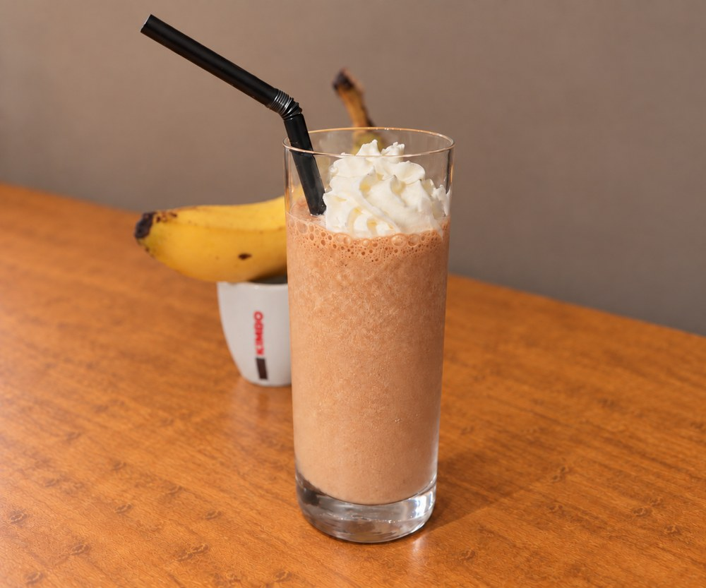

As part of Mastercard GPS RUN, Sakura Inoue stopped by Cafe Pausa Tre in Nishi-Shimbashi and tried our signature Frappe Bananesso. It brings together the sweetness of banana and the aroma of espresso. Thank you for visiting us, Sakura!

Cafe Pausa Tre is a partner shop for November’s dog route. The route takes you through Toranomon, Shimbashi and Shiba, tracing the shape of a dog on the map as you run.
Through Monday, November 30, show your GPS run on a running app and your Mastercard at the shop for a free size upgrade on a Frappe Bananesso (normally ¥250). You can show your run while it’s still in progress. Stop by for a break as you pass through Nishi-Shimbashi.